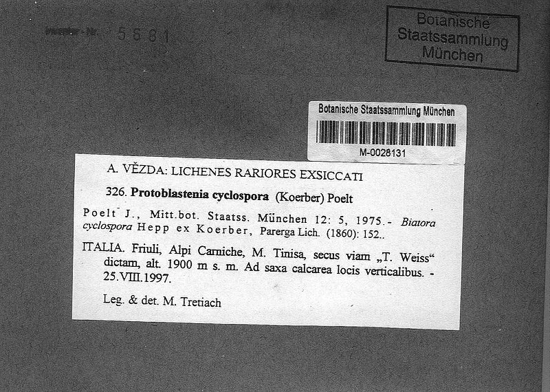

其他无脊椎动物 · 动物界
环孢子虫 Cyclospora cayetanensis

寄生于人小肠上皮的球虫，卵囊随粪便排出，经污染的水和果蔬传播，引起迁延性腹泻。
- 分类
- 门顶复门纲孢子纲目真球虫目科艾美虫科属环孢子虫属
- 栖息环境
- 人小肠上皮细胞内（虫体）；水、土壤与生鲜果蔬表面（卵囊）
- 地理分布
- 热带与亚热带地区，随国际食品贸易出现多地暴发
- 保护级别
- 病原原虫，无保护需求，属食源性病原监测对象
物种志
环孢子虫的卵囊呈球形，直径约八至十微米，囊壁透明，内含两个孢子囊。它寄生于人小肠上皮细胞的胞内，虫体微小，需用改良抗酸染色才能在显微镜下看清。卵囊排出时尚未成熟，需在外界环境中经数天至数周才具有感染性，因此它不能直接人传人，必须经过环境发育这一环。
人因食用被卵囊污染的水、生鲜蔬菜和水果而感染，尤其是进口的树莓、罗勒等生食果蔬。卵囊进入肠道后侵入上皮细胞，引起水样腹泻、腹胀、乏力和体重下降，病程可持续数周，免疫功能低下者更重。该病在热带和亚热带地区流行，也与国际食品贸易有关的暴发相关。防护包括饮用安全水、彻底清洗果蔬、注意个人卫生，治疗常用复方磺胺甲噁唑。
形态与习性
- 卵囊大小直径约八至十微米，球形
- 寄生部位人小肠上皮细胞内
- 感染途径污染的水、生鲜蔬菜与水果
- 潜伏期约一周，病程可持续数周
- 症状水样腹泻、腹胀、乏力、体重下降
- 防护安全饮水、彻底清洗果蔬、勤洗手
趣味知识
- 它排出的卵囊要过几天才具感染性，所以不会在人与人之间直接传播。
- 进口树莓和罗勒引起的暴发，让它在食品安全领域出了名。
- 它的腹泻能拖好几周，病人常被误当成肠易激综合征。